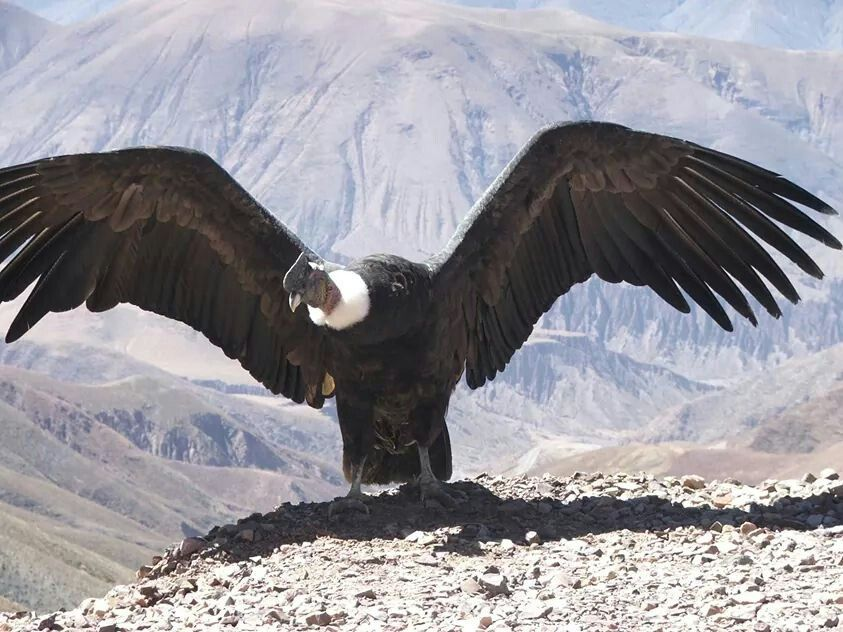
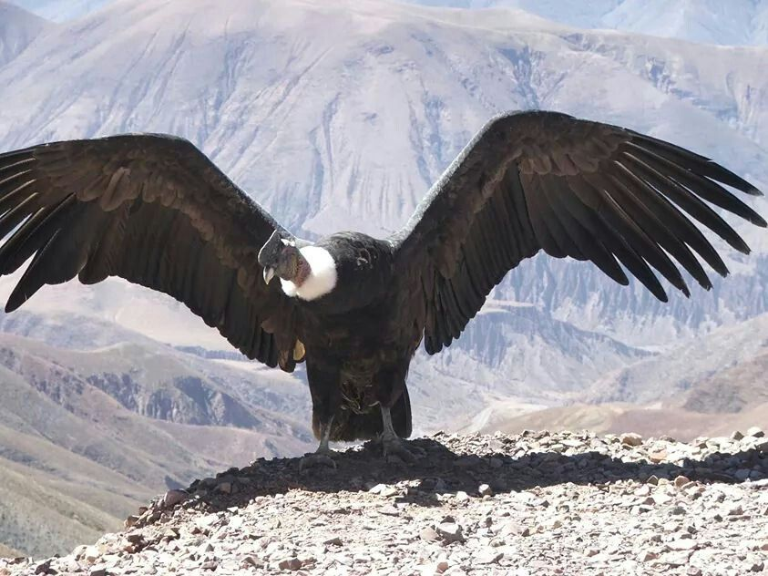

Naturaleza Exuberante de los Andes Colombianos
 Majestuosos picos nevados te esperan para una aventura única Observa la rica fauna de colores brillantes en el cielo
Majestuosos picos nevados te esperan para una aventura única Observa la rica fauna de colores brillantes en el cielo

Bosques Nublados: Adéntrate en los misteriosos bosques nublados que se elevan entre las montañas. Estos bosques están envueltos en neblina y son el hogar de una variedad de plantas epífitas, musgos y orquídeas exóticas. Explora sus senderos empedrados mientras escuchas el eco de los cantos de aves coloridas y observas la danza de las mariposas.

Ríos y Cascadas: Los Andes Colombianos están atravesados por numerosos ríos y arroyos que descienden por las montañas formando hermosas cascadas. Descubre la fuerza y la belleza del agua en cascadas como Salto del Tequendama y Chorrera de la Novia. Siéntete revitalizado mientras te sumerges en sus aguas cristalinas y disfrutas de la frescura de la naturaleza.

Prepárate para una aventura inolvidable mientras exploras los tesoros escondidos de los Andes Colombianos. Estas tierras te invitan a conectarte con la naturaleza en su estado más puro y a descubrir la magia que se encuentra en cada rincón de esta región montañosa. ¡Emprende tu viaje y sé testigo de la grandeza de los Andes Colombianos!
Páramos: Los páramos son ecosistemas únicos y frágiles que se encuentran en las alturas de los Andes Colombianos. Aquí, serás testigo de la vasta extensión de frailejones, plantas adaptadas al frío y las bajas temperaturas. Observa las lagunas cristalinas que se forman en medio de estas tierras altas y escucha el susurro del viento entre los pastizales.

Vida Silvestre: En tu travesía por los Andes Colombianos, te encontrarás con una rica diversidad de vida silvestre. Podrás avistar especies emblemáticas como el cóndor de los Andes, el oso de anteojos, el tapir de montaña y una amplia variedad de aves y mariposas. No olvides llevar tu cámara para capturar estos encuentros inolvidables con la fauna.

Prepárate para una aventura inolvidable mientras exploras los tesoros escondidos de los Andes Colombianos. Estas tierras te invitan a conectarte con la naturaleza en su estado más puro y a descubrir la magia que se encuentra en cada rincón de esta región montañosa. ¡Emprende tu viaje y sé testigo de la grandeza de los Andes Colombianos!